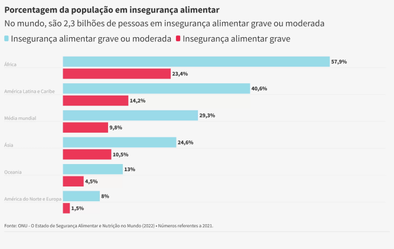

A fome é um problema global que afeta milhões de pessoas em todo o mundo. Segundo a Organização das Nações Unidas para a Alimentação e Agricultura (FAO), cerca de 828 milhões de pessoas foram afetadas pela fome em 2021, enquanto 2,3 bilhões de pessoas sofrem de insegurança alimentar moderada ou grave em 2021.
Em 2021, considerando-se as linhas de pobreza propostas pelo Banco Mundial, cerca de 62,5 milhões de pessoas (ou 29,4% da população do país) estavam na pobreza. Entre estas, 17,9 milhões (ou 8,4% da população) estavam na extrema pobreza. Foram os maiores números e os maiores percentuais de ambos os grupos, desde o início da série, em 2012.
Além disso, entre 2020 e 2021 houve aumento recorde nestes dois grupos: o contingente abaixo da linha de pobreza cresceu 22,7% (ou mais 11,6 milhões de pessoas) e o das pessoas na extrema pobreza aumentou 48,2% (ou mais 5,8 milhões).
O Banco Mundial adota como linha de pobreza os rendimentos per capita US$ 5,50 PPC, equivalentes a R$ 486 mensais per capita. Já a linha de extrema pobreza é de US$ 1,90 PPC, ou R$ 168 mensais per capita.
